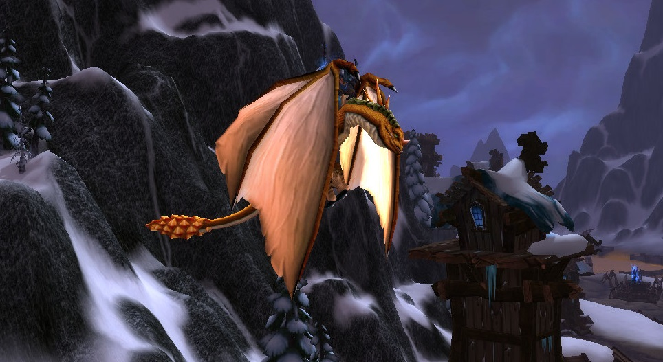
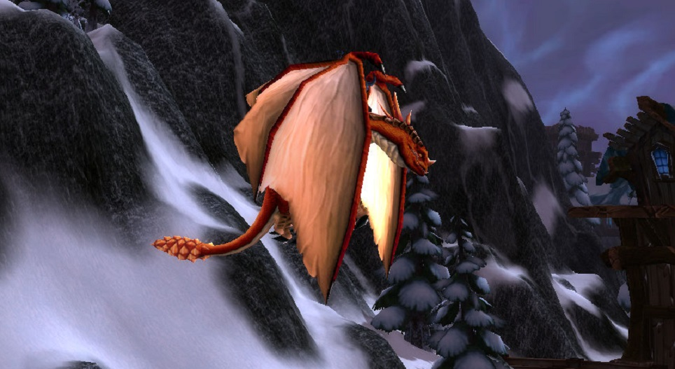
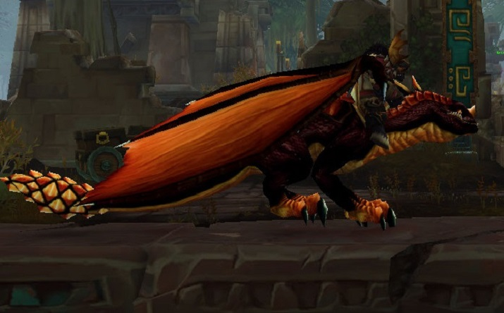
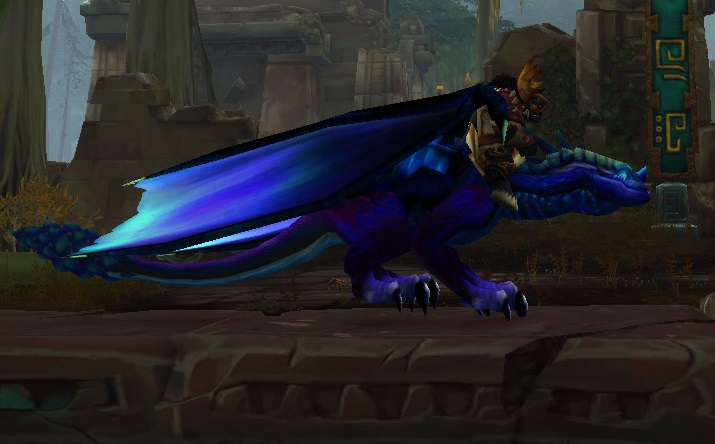
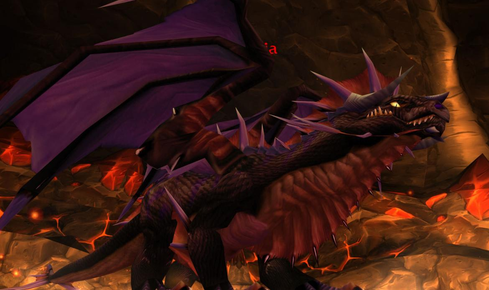
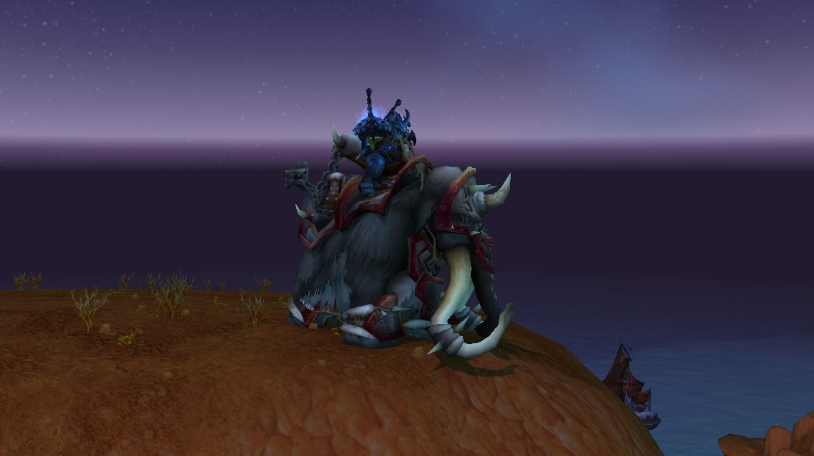
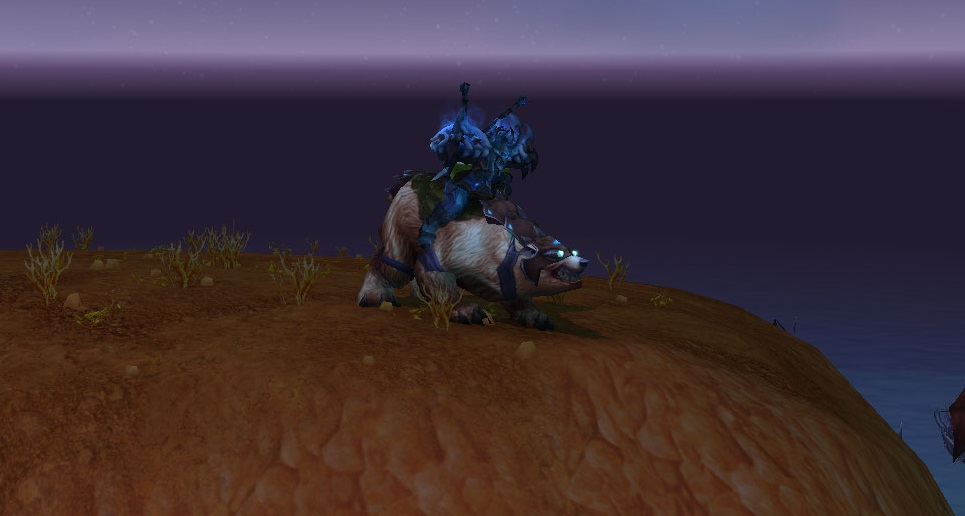
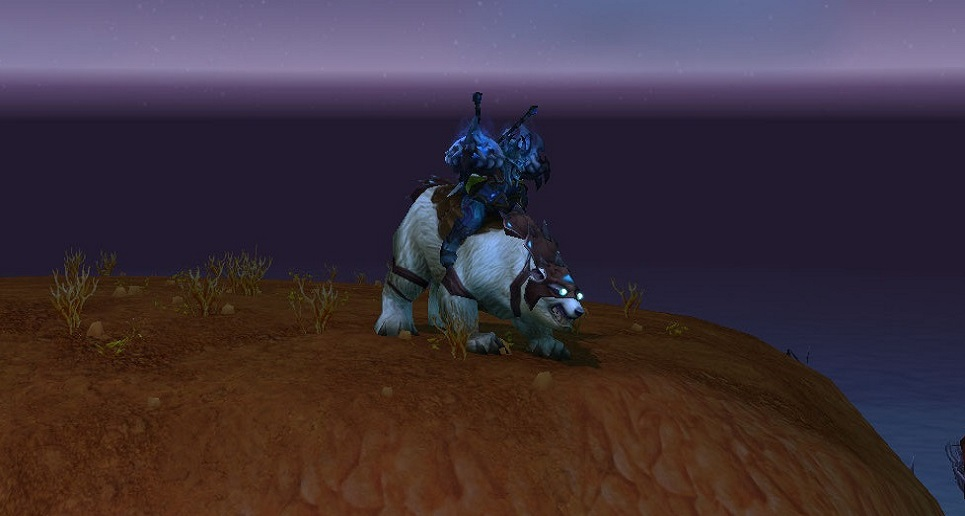
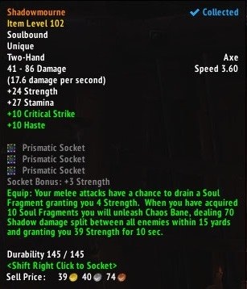

L'extension Wotlk a apporté avec elle sont lot de nouvelles montures, modèles ... Il existe maintenant de nombreux drakes, tous plus colorés les uns que les autres, et même des proto-drakes, une sorte de croisement entre une machine de guerre et un drake !
Il vous suffit de lire ces articles pour tous les découvrir, ainsi que leurs moyens d'obtention !
Les nouveaux modèles de drakes
Le drake rouge et le drake bronze
Le drake rouge est, avec le drake bronze, le plus simple à obtenir : il suffit de l'acheter à l'intendant de la réputation l'Accord du repos du ver une fois que vous êtes exalté auprès de celle-ci !
Le drake de bronze s'obtient en terminant le donjon "L'épuration de Stratholme" en respectant un temps imparti, dans ce cas un boss secret apparait et vous obtiendrez à coup sur cette monture ! Notez qu'il s'agit du seul drake de couleur jaune du jeu.

Le drake de bronze

Le drake rouge
Malygos et les drakes bleus
Dans la zone glaciale du Nexus, en Norfendre, se trouve un raid nommé l'Oeil de l'éternité. En tuant son unique boss en mode héroïque, nommé Malygos, ce dernier aura 3% de chance de vous donner la monture Drake bleu et 1% de chance la monture Drake azur.
Ce dernier possède une apparence assez unique puisqu'il est le seul drake en armure du jeu !
Drake bleu
Malygos, unique boss de l'Oeil de l'éternité
Drake azur
Sartharion
Sous le Temple du repos du ver, énorme édifice dans la zone Désolation des dragons abritant de nombreux raids et personnages importants, se trouve l'entrée du raid "Sanctuaire d'Obsidienne". Si vous réalisez ce raid en mode héroique, vous aurez à coup sûr la monture Drake du crépuscule.
Cependant, si vous le réalisez en mode normal, la monture que vous obtiendrez sera le drake noir !

Drake noir

Drake du crépuscule
Onyxia
Dans la zone Marécage d'Aprefange, en Kalimdor, se trouve un raid qui encore une fois n'abrite qu'un boss : Onyxia, la mère des couvées. Ce dragon a un faible pourcentage de se "dropper lui même", c'est à dire que la monture a exactement l'apparence du boss qui la donne !
Ce modèle et sa rareté rendent cette monture unique, puisque le pourcentage d'obtention est proche de 0.5 !

Des drakes bien plus impressionannts : Les Protos-drakes
L'extension Wotlk a introduit un nouveau type de drake, les protos-drakes : bien plus imposants, souvent en armure, mais aussi bien plus rares ...
Les haut-faits d'Ulduar
Le plus grand raid du jeu en terme de superficie se trouve au nord des Pics foudroyés, j'ai nommé : Ulduar ! Abritant 14 boss dont 1 optionnel, il vous faudra réaliser des haut-faits sur chaque boss afin d'obtenir un méta-haut-fait récompensant vos exploits par l'obtention de deux proto-drakes : Lerouillé et le Bardé de fer !
Le proto-drake vert
Une réputation nommé Les Oracles est disponible après avoir réalisé une suite de quêtes dans le bassin de Sholazar. Une fois le pallier maximal atteint auprès de cette réputation, vous aurez la possibilité d'acheter un Oeuf qui pourra éclore tous les trois jours.
Dans ce dernier, vous pouvez obtenir de l'équipement, des mascottes mais surtout avec 3% de chance, le fameux Proto-drake vert !
Le proto-drake perdu dans le temps
L'extension Wotlk a introduit un tout nouveau genre de monstres : les Ultra-rares. Le principe ?
Prenez une zone immense, définissez plusieurs points d'apparition distants les uns des autres, un timer d'appartion supérieur à 6h et une probabilité de voir le fameux monstre de 20% à chaque apparition ...
Concrètement : Le proto-drake peut apparaitre aux quatre coins de la zone toutes les 6h (au minimum) avec 20% de chance. Dans les autres cas restants, un monstre nommé Vyragosa ( qui ne donne absolument rien) apparaitra, ou bien rien dutout, et le timer est relancé.
Il n'y a aucun moyen de savoir avec certitude le timer, ni quand le dernier proto-drake est apparu. De plus s'il apparait, il patrouille tout autour des montagnes ... Vous allez devoir rester des jours entiers à l'attendre, dans le froid, en espérant le voir apparaitre.
Le proto-drake bleu
Le troisième boss du Donjon d'Utgarde en mode héroïque , en Norfendre, pourra vous donner une fois par jour 1% de chance d'obtenir ce proto-drake au coloris unique !
Le proto-drake rouge
A chaque extension, il existe un haut-fait nommé "Gloire au héros". Ce dernier vous demande d'accomplir des haut-faits dans tous les donjons de l'extension et vous offre en récompense une monture.
C'est exactement de cette manière que s'obtient le proto-drake rouge !
Il est facile de l'obtenir car depuis bien longtemps, 95% des haut-fait sont faisable en solitaire.
Les montures de raid rares
La tete de Mimiron
Ulduar, en plus des deux proto-drakes dont nous avons parlé précédemment, vous permet également d'obtenir une monture pour le moins unique, la tête de Mimiron. Elle s'obtient à un taux de 1% sur le dernier boss, Yogg-Saron, en 25 joueurs et SANS demander de l'aide aux gardiens présents sur le lieu.
Vous croiserez assez rarement cette monture, de par le fait que son taux d'obtention est relativement bas, mais aussi car il faut tuer 11 boss par semaine pour simplement espérer l'avoir !
La Tête de Mimiron
Invincible
Dans le raid Citadelle de la Couronne de Glace, vous affronterez plus d'une dizaine de boss dans différents quartiers afin de parvenir à la flèche supérieure de cette immense construction. C'est ici que se trouve Arthas, un personnage ayant un gros rôle dans l'histoire du joueur
Ce boss emblématique aura, en 25 joueurs et mode héroïque, 1% de chance de vous donner sa propre monture, le cheval squelette Invincible.
Tres convoitée par les joueurs pour son apparence majestueuse et par rapport à l'importance du personnage à qui elle appartenait, il vous faudra surement plusieurs mois afin de l'obtenir.
La fameuse monture Invincible
Le tournoi d'argent
Dans la zone Couronne de Glace, en Norfendre, se trouve une enceinte de type médievale au nord-est de la zone. En vous y rendant et en effectuant quelques quêtes, vous obtiendrez le droit de représenter une race de votre faction dasn ce qu'on appelle Le tournoi D'argent.
Tous les jours, vous aurez des quêtes journalières vous demandant de brandir une lance et de monter un cheval afin de battre en duel les champions des autres réputations, cela pour faire monter votre réputation envers la race que vous représentez.
Le tournoi d'argent est la suite de quête journalière la plus longue du jeu si vous comptez obtenir l'ensemble des récompenses : cela vous prendra presque 1 année et demie sans louper aucune quête !
Les récompenses y sont nombreuses : mascottes, jouets, équipements, transmogriffications mais surtout 15 montures !
Les nouveaux modèles de montures inclassables
Les mammouths
L'extension introduit des montures mammouths afin de coller au paysage glacial du Norfendre. Cinq sont disponibles : deux auprès d'un marchand dans la capitale du Norfendre Dalaran, deux en terminant la réputation Fils de hodir et un dans le raid Caveau d'Archavon, à 5% sur chaque boss.
Ces montures sont également pratiques puisqu'elles possèdent plusieurs places ce qui vous permettra d'emmener vos coéquipiers dans vos aventures. Les plus gand d'entres eux transportent également des marchands et forgerons ce qui vous permettra de vider vos sacs à tout instant !

Un modèle de mammouth
Les ours
Pour aller de paire avec les mammouths, vous pouvez obtenir des ours (et même un ours polaire !). Le premier s'achète au même marchand de Dalaran vendant les mammouths, le second s'obtient à 3% en récompense d'une quête journalière des Pics Foudroyés !

Ours brun en armure

Ours polaire aux yeux bioniques
La quete legendaire de l'extension
A chaque extension, les joueurs peuvent tenter d'obtenir un objet légendaire. Cette extension ne fait pas exception puisque la quête légendaire permettant d'obtenir Deuilleombre, l'épée jumelle de celle du Roi Liche, est apparue.
Cette dernière se déroule dans la Citadelle de la Couronne de glace et vous demandera de tuer certains boss de différents façons ou de réunir des composants divers, tout cela sur plusieurs moi.
A la fin de cette longue aventure, vous obtiendrez l'arme légendaire, mais également des jouets et une monture d'une valeur totale d'environ 400 000 po !

L'arme légendaire en jeu La monture en récompense de la quête légendaire